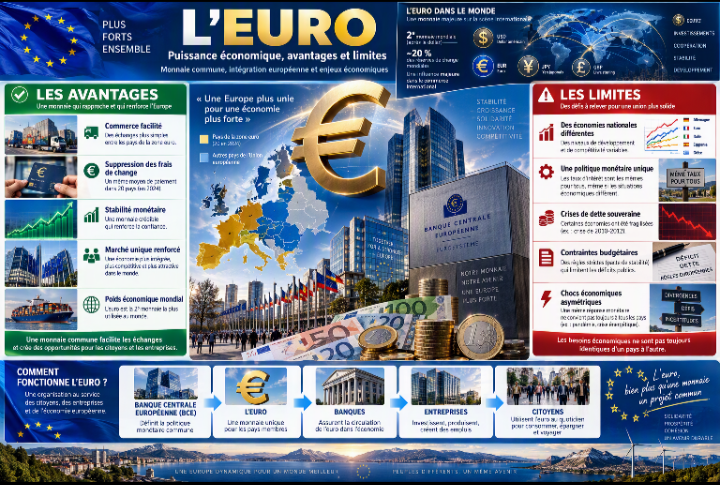
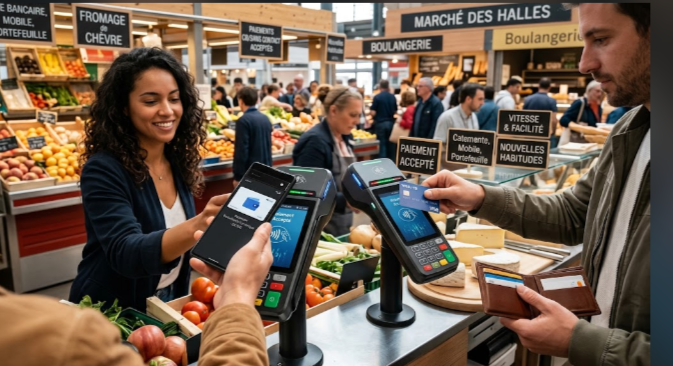
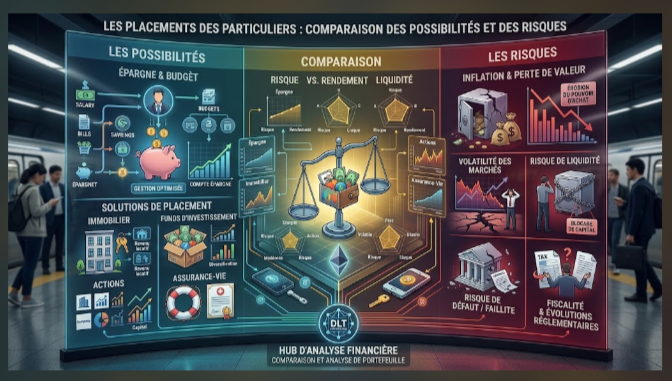

Monnaies du monde, marchés financiers et investissements : comprendre avant de décider
L’économie mondiale repose sur des monnaies, des systèmes bancaires, des marchés financiers et des moyens de paiement en constante évolution. Comprendre leur fonctionnement permet de mieux interpréter l’actualité économique et d’identifier les risques avant de prendre une décision financière.
Pourquoi la valeur d’une monnaie évolue-t-elle ? Comment fonctionne le marché des devises ? Quelle différence existe-t-il entre une monnaie traditionnelle et une cryptomonnaie ? Quels sont les risques liés aux placements financiers ? Cet article présente les principales notions pour mieux comprendre ces mécanismes.
1. Les monnaies du monde : un système d’échange international
Une monnaie est un instrument qui permet de régler des achats, de mesurer la valeur des biens et des services et de conserver temporairement du pouvoir d’achat. Elle est également essentielle aux échanges entre entreprises, banques, investisseurs et États.
Chaque monnaie possède un code international normalisé, généralement composé de trois lettres. Par exemple, EUR désigne l’euro, USD le dollar américain, JPY le yen japonais et GBP la livre sterling. La norme ISO 4217 établit les codes utilisés pour identifier les monnaies dans les opérations financières et commerciales.
Pourquoi existe-t-il plusieurs monnaies ?
Les monnaies sont liées à des systèmes monétaires, à des institutions et à des politiques économiques. Les banques centrales jouent notamment un rôle dans la stabilité monétaire, les taux d’intérêt et les conditions de financement.
Les échanges internationaux imposent souvent de convertir une monnaie dans une autre. Une entreprise européenne qui achète des marchandises facturées en dollars doit ainsi tenir compte du taux de change entre l’euro et le dollar.
2. Comprendre les taux de change
Le taux de change indique combien vaut une monnaie par rapport à une autre. Il peut évoluer en fonction des taux d’intérêt, de l’inflation, de la croissance économique, des échanges commerciaux, des décisions des banques centrales et des anticipations des marchés.
Lorsque l’euro s’apprécie face au dollar, un euro permet d’obtenir davantage de dollars qu’auparavant. À l’inverse, une dépréciation de l’euro peut rendre certains achats facturés en dollars plus chers pour les entreprises et les consommateurs de la zone euro.
Exemple de conversion
Si un taux hypothétique est de 1 euro pour 1,10 dollar, alors 100 euros correspondent à 110 dollars, avant frais et commissions. Cet exemple est pédagogique : il ne représente pas nécessairement un taux disponible auprès d’une banque ou d’un prestataire.
3. Quelques monnaies importantes
Les monnaies suivantes jouent des rôles différents dans les échanges internationaux. Leur importance dépend notamment de la taille des économies concernées, de leur utilisation dans le commerce et de leur présence sur les marchés financiers.
| Monnaie | Code | Zone ou pays |
|---|---|---|
| Euro | EUR | Zone euro |
| Dollar américain | USD | États-Unis |
| Yen | JPY | Japon |
| Livre sterling | GBP | Royaume-Uni |
| Franc suisse | CHF | Suisse |
| Yuan renminbi | CNY | Chine |
| Dollar canadien | CAD | Canada |
| Dollar australien | AUD | Australie |
| Dollar néo-zélandais | NZD | Nouvelle-Zélande |
| Dollar de Singapour | SGD | Singapour |
| Dollar de Hong Kong | HKD | Hong Kong |
| Roupie indienne | INR | Inde |
| Won sud-coréen | KRW | Corée du Sud |
| Rupiah indonésienne | IDR | Indonésie |
| Ringgit malaisien | MYR | Malaisie |
| Peso philippin | PHP | Philippines |
| Baht thaïlandais | THB | Thaïlande |
| Couronne tchèque | CZK | Tchéquie |
| Couronne danoise | DKK | Danemark |
| Forint hongrois | HUF | Hongrie |
| Zloty polonais | PLN | Pologne |
| Leu roumain | RON | Roumanie |
| Couronne suédoise | SEK | Suède |
| Couronne norvégienne | NOK | Norvège |
| Couronne islandaise | ISK | Islande |
| Lire turque | TRY | Turquie |
| Real brésilien | BRL | Brésil |
| Peso mexicain | MXN | Mexique |
| Rand sud-africain | ZAR | Afrique du Sud |
| Shekel israélien | ILS | Israël |
4. L’euro et la zone euro

L’euro est la monnaie commune des pays qui participent à la zone euro. La Banque centrale européenne, avec les banques centrales nationales concernées, participe à la conduite de la politique monétaire.
Une monnaie commune facilite les paiements et la comparaison des prix entre les pays participants. Elle élimine les conversions de devises entre ces pays, mais elle ne supprime pas les différences de salaires, de fiscalité, de productivité ou de niveau de vie.
La valeur externe de l’euro continue d’évoluer face aux autres monnaies. Les variations peuvent avoir des conséquences sur les importations, les exportations, les voyages à l’étranger et les résultats des entreprises internationales.
5. Le marché des changes : le Forex
Le marché des changes, souvent appelé Forex, permet d’échanger une monnaie contre une autre. Il est utilisé par les banques, les entreprises, les investisseurs institutionnels, les gestionnaires d’actifs et d’autres participants.
Les opérations servent notamment à régler des échanges commerciaux, convertir des revenus étrangers ou réduire certains risques de change. D’autres opérations cherchent à tirer profit des variations des cours.
Qu’est-ce qui fait varier les devises ?
- Les décisions de politique monétaire et les taux d’intérêt.
- L’inflation et les perspectives de croissance économique.
- La situation budgétaire et extérieure des pays.
- Les événements géopolitiques et les incertitudes économiques.
- Les flux de capitaux et les anticipations des opérateurs.
Le marché des changes fonctionne à l’échelle internationale et les cours peuvent évoluer rapidement. Les particuliers doivent notamment comprendre les frais, l’effet de levier éventuel et le risque de perte avant d’utiliser des produits spéculatifs.
6. Les cryptomonnaies et les actifs numériques
Les cryptomonnaies sont des actifs numériques reposant généralement sur des technologies de registre distribué, dont la blockchain. Bitcoin et Ether figurent parmi les actifs les plus connus.
Contrairement à l’euro ou au dollar, une cryptomonnaie n’est pas automatiquement une monnaie ayant cours légal. Sa valeur dépend notamment de l’offre et de la demande, de son utilisation, de la liquidité du marché et des anticipations des participants.
Quels sont les principaux risques ?
- Des variations de prix parfois très importantes.
- La perte d’accès à un portefeuille ou le vol de clés privées.
- Les escroqueries, les faux investissements et les plateformes frauduleuses.
- Les défaillances techniques ou opérationnelles de certains prestataires.
- Des différences de protection juridique selon le produit et le prestataire.
Dans l’Union européenne, le règlement MiCA encadre certains marchés de crypto-actifs et prestataires. Cet encadrement ne supprime pas les risques de marché et ne garantit pas le remboursement des pertes. La protection applicable dépend du service, de l’actif et de la situation concernée.
7. Les paiements numériques

Les paiements numériques comprennent notamment les virements bancaires, les paiements par carte, les portefeuilles électroniques et les transferts instantanés. Ils facilitent de nombreuses transactions entre particuliers et entreprises.
Un paiement numérique n’est pas nécessairement une cryptomonnaie. Lorsqu’une personne règle un achat par carte bancaire, la transaction repose généralement sur des infrastructures bancaires et des comptes libellés dans une monnaie traditionnelle.
Les paiements instantanés
Les virements instantanés permettent, lorsque les conditions du service sont remplies, de transférer des fonds en quelques secondes. Leur disponibilité, leurs limites et leurs éventuels frais dépendent du service proposé et de la réglementation applicable.
Les précautions à prendre
- Vérifier le nom du bénéficiaire et les coordonnées avant d’envoyer de l’argent.
- Ne jamais communiquer ses codes confidentiels à un interlocuteur.
- Se méfier des demandes de paiement urgentes et inhabituelles.
- Utiliser les canaux officiels de sa banque en cas de doute.
- Conserver les justificatifs utiles pour suivre les opérations.
8. Les marchés financiers
Les marchés financiers mettent en relation des acteurs qui cherchent à financer des projets, placer des capitaux, transférer des risques ou échanger des actifs.
Les actions
Une action représente une part du capital d’une entreprise. Son détenteur peut bénéficier d’une hausse du cours et, lorsque l’entreprise décide de distribuer des dividendes, recevoir une partie des bénéfices distribués. Toutefois, le cours peut baisser et l’investisseur peut perdre une partie ou la totalité du capital investi.
Les obligations
Une obligation est un titre de dette. L’émetteur emprunte de l’argent auprès des investisseurs et prévoit des remboursements selon les conditions du titre. Le risque dépend notamment de la solvabilité de l’émetteur, des taux d’intérêt, de la durée et des conditions de revente.
Les fonds et les ETF
Les fonds d’investissement regroupent des capitaux afin d’investir dans différents actifs. Certains ETF cherchent à suivre un indice boursier. La diversification peut répartir certains risques, mais elle ne garantit ni un gain ni la protection contre une baisse générale des marchés.
9. Investir en tant que particulier

Avant d’investir, il est utile de préciser son objectif : financer un projet, préparer une dépense future ou constituer une épargne à long terme. La durée envisagée et la capacité à supporter une perte influencent les choix possibles.
Les questions à se poser avant d’investir
- Quel est l’objectif de ce placement ?
- Quand l’argent devra-t-il être disponible ?
- Quelle perte financière serait supportable ?
- Quels frais, commissions et impôts peuvent s’appliquer ?
- Le produit est-il compréhensible et réglementairement encadré ?
- Peut-on récupérer son argent facilement ou existe-t-il des restrictions ?
Il est généralement prudent de comprendre le produit avant de s’engager, de comparer les frais et d’éviter de concentrer toutes ses économies sur un seul actif. L’épargne nécessaire aux dépenses courantes ne doit pas être confondue avec un capital que l’on peut immobiliser ou risquer.
10. Rendement, risque et horizon de placement
Le rendement mesure le résultat financier d’un placement sur une période donnée. Il peut provenir d’intérêts, de dividendes ou de variations de prix. Pour évaluer un résultat, il faut aussi prendre en compte les frais, la fiscalité et l’inflation.
Un rendement annoncé comme élevé peut s’accompagner d’un risque important. Les promesses de gains rapides, réguliers et garantis doivent être examinées avec une vigilance particulière.
Exemple pédagogique
Un placement de 1 000 euros qui augmente de 5 % avant frais et impôts atteint 1 050 euros. Si sa valeur baisse ensuite de 10 % à partir de 1 050 euros, elle tombe à 945 euros. Les pourcentages successifs s’appliquent à des montants différents : les gains et les pertes ne s’annulent donc pas automatiquement.
Cet exemple est une illustration mathématique et non une prévision de rendement.
11. Les risques et les dérives financières
Les marchés financiers peuvent connaître des périodes de hausse, de baisse et de forte volatilité. Des facteurs économiques, géopolitiques, monétaires ou propres à une entreprise peuvent modifier rapidement la valeur d’un investissement.
Il faut également distinguer les fluctuations normales du marché des pratiques frauduleuses. Certaines offres utilisent de faux témoignages, de faux résultats ou des promesses de gains irréalistes pour inciter les particuliers à transférer leur argent.
Signaux d’alerte
- Des gains prétendument garantis sur un produit risqué.
- Une pression pour transférer de l’argent immédiatement.
- Un interlocuteur impossible à identifier ou à vérifier.
- Des frais de retrait inattendus ou des demandes répétées de versement.
- Des documents qui ne permettent pas de comprendre le fonctionnement du produit.
Avant de transmettre des fonds, il est important de vérifier les informations disponibles auprès des autorités compétentes et de ne pas se fier uniquement aux publicités ou aux avis publiés sur les réseaux sociaux.
12. Comment suivre l’économie mondiale de manière rigoureuse
Pour comprendre une évolution financière, il est préférable de distinguer les données observées, les déclarations officielles, les analyses et les hypothèses.
- Consulter les banques centrales pour les décisions monétaires.
- Vérifier la date et la méthodologie des taux de change publiés.
- Lire les publications statistiques des institutions reconnues.
- Comparer plusieurs sources fiables lorsqu’un événement est important.
- Ne pas confondre une corrélation avec une preuve de causalité.
- Tenir compte des incertitudes et des limites des données disponibles.
Un chiffre économique n’a de sens qu’avec son unité, sa période, son périmètre et sa source. Une donnée ancienne peut rester utile pour comprendre une tendance historique, mais elle ne doit pas être présentée comme une valeur actuelle.
13. Conclusion : comprendre avant de décider
Les monnaies, les taux de change, les paiements numériques et les marchés financiers sont étroitement liés à l’activité économique mondiale. Ils influencent le commerce, le coût de certains achats, le financement des entreprises et les décisions d’épargne.
Comprendre leurs mécanismes ne permet pas de prévoir avec certitude les mouvements futurs des marchés. Cela permet cependant de mieux évaluer les informations, de poser les bonnes questions et de reconnaître les risques avant de prendre une décision.
Une information financière utile doit être vérifiable, replacée dans son contexte et accompagnée de ses limites. Face aux promesses de gains faciles, la prudence et la vérification restent essentielles.
Sources et références
Les ressources suivantes permettent de consulter les données monétaires, les informations institutionnelles et les conseils de prévention mentionnés dans cet article.
- Banque centrale européenne (BCE) — taux de change de référence et données monétaires : Consulter les taux de change de référence .
- Organisation internationale de normalisation (ISO) — norme ISO 4217 pour les codes des monnaies : Consulter la norme ISO 4217 .
- Banque des règlements internationaux (BRI) — enquêtes et statistiques sur les marchés financiers internationaux : Consulter les statistiques de la BRI .
- Banque centrale européenne — informations sur l’euro et les paiements : Site officiel de la BCE .
- Autorité des marchés financiers (AMF) — informations pédagogiques sur l’investissement, les risques, les placements et les crypto-actifs : Site officiel de l’AMF .
- Commission européenne — réglementation et informations sur les paiements : Informations européennes sur la finance .
- Banque mondiale — données et études sur les transferts d’argent internationaux : Site officiel de la Banque mondiale .
- Service-Public.fr — informations pratiques sur les produits d’épargne réglementée : Site officiel de l’administration française .